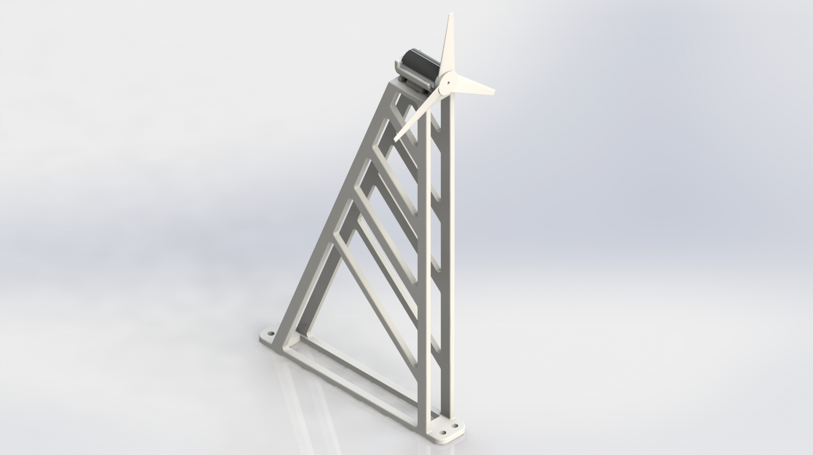

Spring 2015
This project was created by four other students and me as our final design project for Three Dimensional Modeling class at UC Berkeley. Our structure was designed for two performance tests: to resist deflection in the direction of airflow and produce maximum power in a one-directional 25 mph wind. The tower, printed using ABS, is 16 inches tall and the rotor has a radius of 6 inches.

The blade design attempts to maximize the lift-to-drag ratio. The pitch angle increases linearly from 2 degrees at the tip to 14 degrees along the length of the blade. The greater angle near the hub produces more lift and compensates for the slower tangential velocity. We designed the rotor with three blades as a compromise between four blades (too cramped along the circumference of the hub) and two (too much wasted open area in the blade's swept area).
The motor cradle holds the motor securely in place with two zip ties that pass through channels on its underside. The rear hole accomodates an eye hook for displacement testing.
The tower was designed to strongly resist deflection in one direction. The trusses reinforcing the triangular frame accomplish this goal. With little previous design experience between the members of our team, many of the dimensions were determined arbitrarily or experimentally using Solidworks' SimulationXpress tool with the goal of minimizing horizontal displacement of the top of the tower and reducing von Mises stress in corners. The final combination of number, spacing, and dimension of trusses reduced the simulated displacement the most. The design lacks bracing to resist side-to-side displacement and is obviously unsuitable for real applications; however, it fulfilled the narrow design requirements for this project without adding unnecessary weight and material.
The project design was split into five separate components that fit within the space constraints of the 3D printers and laid flat to minimize the amount of support material used. I split the tower in Solidworks in such a way that increased the total mating surface area and added mating pins and holes to each interface to strengthen the glued joints assist in aligning the parts during assembly. The parts were bonded together with epoxy to form the final tower.
Once the turbine was completed, it was tested to measure blade performance via power output at a set wind speed, and rigidity of the tower.
When subjected to 24.5 mph winds, the rotor reached a maximum of 8500 RPM under no load (which matched - and was most likely bounded by - the upper limit for the angular frequency of the motor). When a load was introduced by a potentiometer, the turbine produced a maximum of 2.60 watts at a blade speed of 6100 RPM. This represented an 17% effeciency in harvesting energy from the stream of air, or 29% of the theoretical Betz limit for wind turbine efficiency.